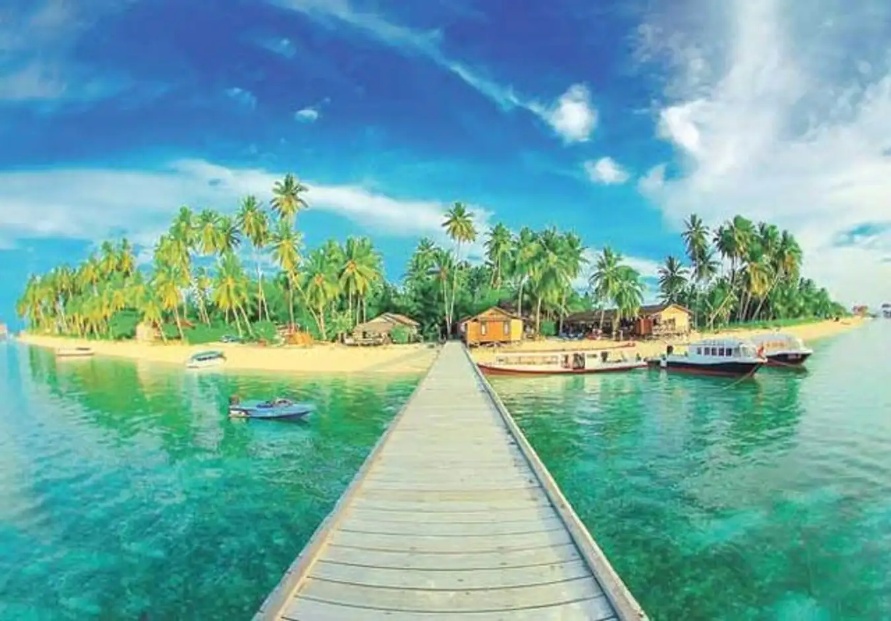

Gunung Rinjani terletak di kawasan konservasi Taman Nasional Gunung Rinjani yang berada di Nusa Tenggara Barat, Pulau Lombok bagian Lombok Timur. Gunung ini memiliki ketinggian sekitar 3.726 mdpl. Gunung Rinjani adalah salah satu gunung yang menjadi favorit para pendaki karena gunung ini terkenal sangat indah. Bahkan gunung ini disebut-sebut sebagai wisata pendakian gunung terindah di Asia Tenggara. Gunung ini memiliki pemandangan indah yang banyak mulai dari pada sabana yang banyak ditumbuhi bunga edelweis, pemandangan matahari terbit yang sangat indah, lalu ada pemandangan paling indah di gunung ini pada ketinggian 2000 meter, yaitu Danau Segara Anak. Danau ini memiliki keunikan yaitu di tengah-tengah danau tersebut ada sebuah gunung kecil yang dikenal dengan Gunung Barujari.

Gunung Semeru juga salah satu gunung terindah di Indonesia. Gunung ini menjadi gunung tertinggi yang ada di Pulau Jawa. Semeru memiliki ketinggian sekitar 3.676 mdpl. Puncak yang ada di Gunung Semeru memiliki nama puncak Mahameru. Gunung ini termasuk pada kawasan Taman Nasional Bromo Tengger Semeru yang berada Kabupaten Lumajang dan Kabupaten Malang. Gunung Semeru memiliki beberapa tempat yang memiliki keindahan yang dapat memanjakan mata kita saat berada di sana. Tempat-tempat tersebut memiliki keunikannya tersendiri, bahkan ada beberapa mitos juga yang ada di tempat-tempat tersebut. Yang pertama adalah Ranu Kumbolo, tempat ini memiliki pemandangan yang cukup indah dipandang. Danau Ranu Kumbolo memiliki luas sekitar 14 hektar. Danau ini biasanya dijadikan sebagai tempat istirahat sebelum melanjutkan sampai ke puncak Mahameru. Lalu yang kedua adalah Tanjakan Cinta. Tanjakan Cinta adalah sebuah bukit yang berbentuk seperti simbol cinta. Biasanya tanjakan ini dilalui pendaki jika ingin melanjutkan dari Danau Ranu Kumbolo ke Oro-Oro Ombo. Tanjakan ini memiliki mitos bahwa jika saat mendaki bukit ini lalu menoleh ke belakang maka kisah cintanya dengan kekasih akan putus. Ketiga, Oro-Oro Ombo. Oro-Oro Ombo merupakan sebuah sabana luas. Uniknya adalah warna pada sabana ini tergantung pada musim yang ada. Kalian bisa saja menjumpai bunga lavender dengan warna ungu saat masanya mekar. Yang keempat Kali Mati. Kali Mati merupakan tempat yang luasnya 20 hektar dengan pemandangan berupa bunga edelweis. Jalur ini digunakan sebagai jalur transit jika ingin mendaki sampai puncak. Berikutnya yang terakhir adalah puncak Mahameru. Puncak ini merupakan puncak tertinggi dari Gunung Semeru. Kalian bisa menemukan pemandangan yang sangat indah seperti samudera di atas awan, semburan batu vulkanik, dan juga asap pekat dari kawah Jonggring Saloko. Namun, tempat ini juga pernah ditutup karena kondisi saat gempa dan semburan vulkanik yang berbahaya.

Mutiara Papua, Raja Ampat tidak pernah mengecewakan untuk memberikan suguhan keindahan alam terutama dari pantai indah dan air laut serta biota alamnya. Dari 4 pulau besar dan 1.847 pulau-pulau kecil yang tersebar di Raja Ampat yang merupakan provinsi dari Papua Barat ini memiliki pantai unik yang hanya bisa kamu nikmati pada saat air laut sedang surut yaitu Pantai Pasir Timbul. Pasir Timbul ini hanya bisa kamu nikmati di jam-jam tertentu di saat air laut sudah surut seperti pagi di jam 06.00 WITA, siang sekitar pukul 11.00 WITA, dan sore sekitar pukul 15.00 WITA. Pasir timbul bisa kamu kunjungi di dekat Pulau Kepulauan Sembilan, Kabupaten Raja Ampat, Papua Barat. Karena keunikannya yang dapat hilang dan timbul, obyek ini disebut Pasir Timbul. Dari lokasi ini kamu bisa benar- menikmati pemandangan air biru yang jernih berikut gradasinya dan juga pemandangan bukit-bukit Raja Ampat. Untuk kamu yang hobi snorkeling juga bisa menyelam sambil melihat ikan-ikan hias yang berenang bebas. Menarik bukan?
Pantai Koka terletak di Desa Wolowiro, Kecamatan Paga, Kabupaten Sikka, Flores, Nusa Tenggara Timur (NTT). Salah satu destinasi pantai di Indonesia yang terindah ini merupakan surga tersembunyi di Nusa Tenggara Timur yang memiliki keindahan laut yang biru, pasir putih yang halus dan terumbu karang yang terlihat sangat indah. Pantai ini dikelilingi tebing batu di sebelah kanan dan bukit yang bisa menjadi pilihan untuk mengambil gambar keindahan pantai ini dari ketinggian. Pantai Koka sendiri memiliki 2 pantai yang dipisahkan oleh tebing yang jika kamu lihat dari atas, pantai ini berbentuk seperti angka 3. Untuk kamu yang suka surfing, pantai ini juga bisa kamu gunakan untuk surfing karena memiliki ombak yang cukup tinggi sekitar 1,5 meter.

Pulau Derawan tidak bisa dilupakan jika membicarakan mengenai keindahan pantai di Indonesia. Menginjakan kaki di pantai yang ada di pulau ini, kamu akan langsung disambut dengan hamparan pasir putih dan pemandangan air laut yang biru jernih yang mempesona. Pulau Derawan juga pernah dicalonkan ke UNESCO pada tahun 2005 sebagai salah satu situs warisan dunia dan menjadi Pristine Island yaitu sebuah pulau yang masing sangat terjaga keasriannya. Selain Pantai Derawan yang indah, pulau ini juga bisa menjadi tujuan untuk snorkeling dan diving karena keindahan biota alam seperti ikan-ikan warna-warni hingga ikan-ikan langka yang terdapat di sekeliling pulau ini. Bahkan tanpa menyelam pun, dengan air laut yang jernih layaknya kaca, terumbu karang bisa langsung dilihat langsung dari daratan. Pengunjung juga bisa mendapatkan pengalaman untuk melihat penyu-penyu lucu di penangkaran penyu yang terdapat di Pulau ini, lho!

Menduduki jejeran pantai terbaik di Indonesia, Pantai Nihiwatu yang ada di Nusa Tenggara Timur ini menjadi salah satu pantai yang wajib untuk didatangi. Destinasi pantai di Indonesia ini seperti layaknya surga bagi para peselancar lokal maupun mancanegara yang tertantang untuk mencoba berselancar di ombak legendaris Nihiwatu. Selain untuk berselancar, pantai ini juga memiliki hamparan pasir putih yang indah dan juga pemandangan yang menakjubkan. Kamu bisa menikmati pemandangan gradasi air laut biru yang indah dari pinggir pantai yang masih tergolong sepi.